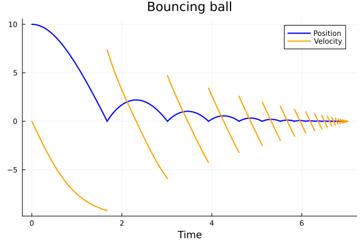

A General Example
A general system consists of the data $(f, h, \Delta)$ where
\[ \begin{cases} \dot{x} = f(x, t), & h(x) \ne 0, \\ x^+ = \Delta(x), & h(x) = 0. \end{cases}\]
\[ \begin{cases} \ddot{x} = -g -\alpha\cdot \dot{x} \cdot|\dot{x}|, & x > 0 \\[1ex] \dot{x}^+ = -e\dot{x}^-, & x = 0 \end{cases}\]
import HybridDynamics as HD
import Plots as plt
using LaTeXStringsfunction f_ball(x, t)
g = 9.81
α = 0.1
q, v = x
return [v, -g-α*v*abs(v)]
end
h_ball(x) = x[1]
Δ_ball(x) = [abs(x[1]), -0.8*x[2]]
sysG = HD.GeneralSystem(f_ball, h_ball, Δ_ball; direction=-1)
probG = HD.prob(sysG, [10.0, 0.0], (0.0, 15.0))
solG = HD.solve(probG)HybridDynamics.GeneralSol{Vector{Float64}, Vector{Vector{Float64}}, Vector{Vector{Float64}}}([0.0, 0.0004137035220151123, 0.0007992942429717667, 0.0011689427505492955, 0.0015293440383194999, 0.0018843083467390837, 0.0022360498424705377, 0.002585871622195792, 0.002934546499156257, 0.0032825349190697866 … 7.010969436966226, 7.011316399369156, 7.011663361755156, 7.01201032419594, 7.012357286686586, 7.012357286686586, 7.012357286686586, 7.012704249183378, 7.012704249183378, 7.012704249183378], [[10.0, 0.0], [9.999998321012667, -0.004058430869562773], [9.999995297567123, -0.007841073471441399], [9.999991058688718, -0.011467320469918663], [9.999985651641985, -0.015002848990832856], [9.999979090112948, -0.018485036727417043], [9.999971374449943, -0.021935603875767932], [9.99996250040334, -0.02536733302378055], [9.999952462817939, -0.028787804670754612], [9.999941257055376, -0.03220153498582669] … [2.1231294362844e-7, 0.008524269487519914], [1.9889570585363317e-6, 0.0051205674050299665], [2.5846449682360213e-6, 0.0017168662961049657], [1.99937649331225e-6, -0.0016868351492621697], [2.3315118360038457e-7, -0.005090536283396153], [2.3315118360038457e-7, -0.005090536283396153], [2.3315118360038457e-7, 0.004072429026716922], [4.6517427073797476e-7, 0.0006687269176737405], [4.6517427073797476e-7, 0.0006687269176737405], [4.6517427073797476e-7, -0.0005349815341389924]], [[-0.004058430869562773, -9.809998352913889], [-0.007841073471441399, -9.809993851756682], [-0.011467320469918663, -9.809986850056125], [-0.015002848990832856, -9.809977491452216], [-0.018485036727417043, -9.809965830341719], [-0.021935603875767932, -9.809951882928262], [-0.02536733302378055, -9.809935649841526], [-0.028787804670754612, -9.809917126230225], [-0.03220153498582669, -9.809896306114457], [-0.03561122184530796, -9.809873184087868] … [0.008524269487519914, -9.81000726631703], [0.0051205674050299665, -9.810002622021056], [0.0017168662961049657, -9.810000294762988], [-0.0016868351492621697, -9.80999971545872], [-0.005090536283396153, -9.809997408644035], [-0.005090536283396153, -9.809997408644035], [0.004072429026716922, -9.810001658467819], [0.0006687269176737405, -9.810000044719569], [0.0006687269176737405, -9.810000044719569], [-0.0005349815341389924, -9.809999971379476]], [1.67332283269084, 3.0136543421547635, 3.928216993717668, 4.603906652539079, 5.120489542937328, 5.522453697215732, 5.838304722163941, 6.087871079733558, 6.285666826452025, 6.442664112640028 … 6.948336502586106, 6.966574182509266, 6.9805410336577145, 6.991093431458308, 6.998915641112643, 7.0045582119386935, 7.008459161217891, 7.010969436966226, 7.012357286686586, 7.012704249183378], [4237, 8532, 11322, 13336, 14857, 16032, 16951, 17675, 18248, 18703 … 20174, 20228, 20270, 20302, 20326, 20344, 20357, 20366, 20372, 20375])times, states = HD.split_jumps(solG)
plt.plot(times, getindex.(states, 1), label="Position", lw=2, lc=:blue)
plt.plot!(times, getindex.(states, 2), label="Velocity", lw=2, lc=:orange)
plt.plot!(title = "Bouncing ball", xlabel = "Time", grid = true)